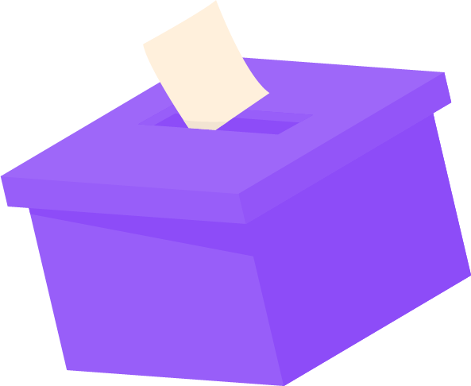
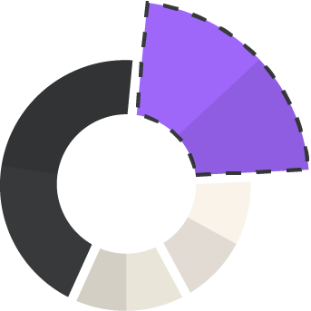

La politique avec un grand Q !
Un média dédié à informer les jeunes citoyens français sur des sujets politiques avec transparence, en garantissant une communication claire sur nos sources. Nous offrons une expérience utilisateur personnalisée, simple et accessible grâce à du contenu infographique.
FONCTIONNEMENT
Découvrez comment Decliq vous permet de suivre les actualités politiques.
Des news adaptés à votre profils

Des sondages quotidiens pour récolter l'avis des utilisateur

Des contenues infographique qui permettent une meilleur compréhension
À propos
Decliq, c'est une plateforme neutre et accessible pour les citoyens désireux de s'informer et d'agir.
Contact
Pour toute question ou collaboration, contactez-nous via contact@decliq.fr.